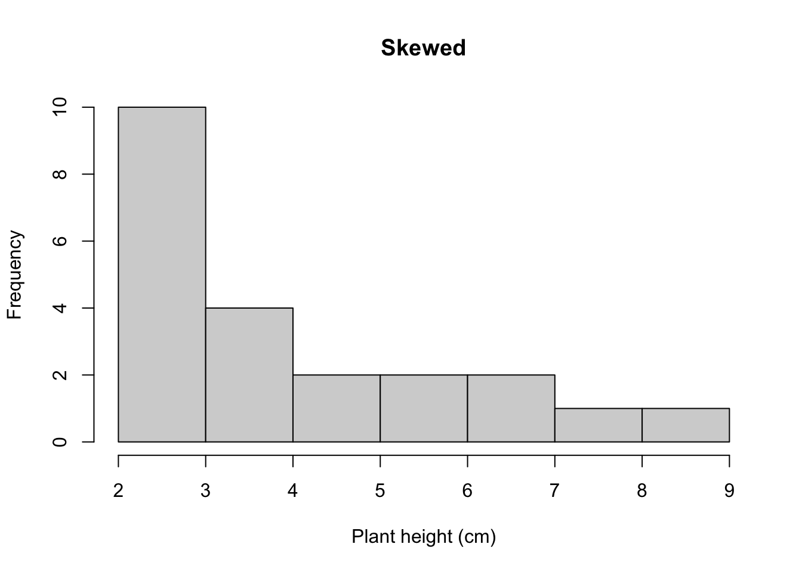
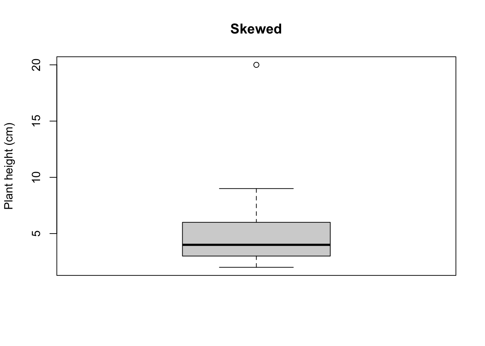
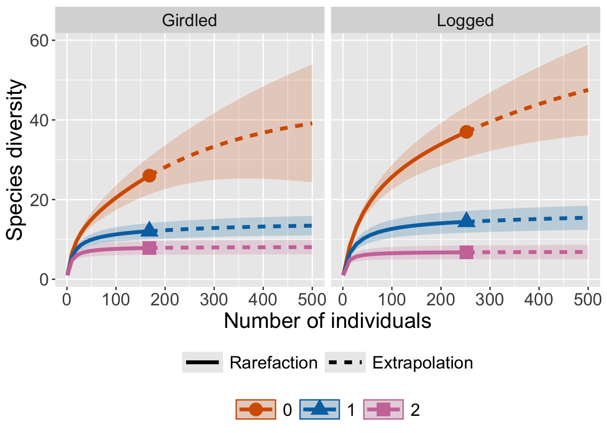

Structural Equation Models
2025-05-31
Chapter 1 Introduction
1.7 What can statistics tell us?
Welcome to our statistical exploration of the natural world! I want you to have an intuitive understanding of what we do when we conduct statistical analysis, understand how to select the appropriate statistical analysis and the assumptions of that analysis, and make a connection between running an analysis in a statistical software package and the statisticese of those unique individuals that we call statisticians. I think this will give you the confidence to tackle any analytical situation!
First off, we are not statisticians - whew! We are ecologists and social scientists. This means that we do not need to understand theoretical mathematical frameworks. We need to APPLY statistics appropriately. There will be limits to our mathematical understanding of statistics, and this is OKAY! Think of all of the knowledge about the natural world and conducting field work that we possess that statisticians don’t! I’m happy to dive down math rabbit holes with you, BUT we don’t need to and CAN’T know everything.
Almost all statistical analysis boils down to answering 1 of 2 questions: Do these groups differ? Is there a relationship between these variables?
These seem like relatively simple questions to answer, perhaps just by looking at our data, so Why do we need statistics?
The short answer is: error and sampling! Whenever we collect data, we introduce error; our instruments are imprecise and do not capture an exact measure of whatever you are measuring (e.g., height, weight), and humans make mistakes during measurement collection. Secondly, we are always measuring a sub-sample of the true population (true population meaning all representatives of whatever you are trying to measure; this can be grass, marbles, or the tibia of humans). Not only is in intractable in most cases to measure all individuals of whatever you are interested in, even when it is possible to attempt to measure all individuals (like in the case of rare plant work), statistics acknowledges that it is still unlikely that we are able to completely measure all individuals in your focal population, since individuals may be dormant or challenging to locate. If we could measure all individuals of our population of interest with perfect accurately, we could calculate population parameters, or quantities describing populations like averages and variation, rather than estimating these metrics, and in many cases just compare them. In this way, statistics is inherently practical, and asks, what can we say about whatever we are looking at, given our numerous flaws!
1.8 Sampling populations
After a few classes, we will explore sampling methodology in greater depth in order to design appropriate experiments that test a statistical hypothesis. Let’s quickly talk about sampling now so that we have a shared understanding and vocabulary to build on - after all, statistics really centers around estimating characteristics of a true population from a sample. The really, truly amazing thing is that by properly applying statistics, we can learn practically anything about almost any population using samples!
In statistics, a population refers to the all units of the thing that you are interested (i.e., all suriname frogs, all grains of sand, all aspen leaves from a genotype found in southern Arizona). Note: Population in statistics differs from the term population in population ecology, where a population refers to a group of individuals in a particular area that interbreed.
A sample is a subset of the population that we measure to infer something about the population. Statistical analyses depend on a random sample or must account for non-randomness within the sample. Just imagine, for instance, that you were interested in whether coat color in cats differed between house cats and feral cats. To select the house cat sample, you randomly select house numbers, visit the house and record coat color, thus collecting a random sample. However, to survey feral cats, you go to several cat colonies at night and record the first cat that you see, which are always white or tan. The sample of feral cats introduces bias, and causes you to overestimate the number of light colored feral cats, and underestimate dark feral cats.
We can conduct statistical analysis until the cats come home (ha!), but if your sample is biased, our results will always be meaningless. In the cat example, it was pretty obvious that the researcher was introducing bias, BUT it is REALLY easy to introduce bias in ecological and social research on accident! Imagine that you looking at fire effects on vegetative communities in the Sonoran. In high severity burn areas, there are thickets of cat’s claw (a pokey plant). Without proper field sampling protocols, it is very tempting to avoid establishing plots in the cat claw thickets, thus not capturing true differences in vegetation along burn severity gradients. We can go over field sampling methodology later, but let’s talk about several types of appropriate sampling strategies. The key is that we want our sample to be representative of the true population, so that estimates of values (i.e., means, variance) from the sample represent true population parameters.
Simple Random Sampling is when every sample has an equal likelihood of being selected.
We can quickly and easily generate such a sample in R, using the sample function.
## [1] 77 44 54 85 25 29 20 93 13 100#1:10000 = numbers to chose among
#number of random numbers you wish to generate
#to replace or not (in other words do you wish for the same number to be selected multiple times)Random Cluster Sampling randomly select groups (aka clusters) within a population. This sampling design is used commonly in ecology, when we select random locations for plots, then measure all individuals within those plots. If for instance, we are interested in Ponderosa Pine growth rates on the Coconino National Forest, we would randomly assign points across Pondo habitat on the Coconino. At each point, we would set up a plot in which we measure Ponderosa Pines within an 11.71m radius plot. Why wouldn’t we just go out to a point and measure 1 tree to create a totally random sample? The plots are randomly assigned (yay!), but the trees within the plots are not independent. In other words, we might expect measures of trees within plot A to be more similar to each other than they are to trees within plot B, due to differences in microsite characteristics, genetic similarity among co-occurring trees, or site history (logging, fire). Luckily, we can account for this non-independence, as long as the plots are random!
Stratified Sampling draws samples using proportionality based on homogeneous groupings known as strata. This type of sampling is frequently used in ecology to account for landscape differences in key factors. For instance, say you asked to classify vegetation types for a Nature preserve in southern Arizona. The reserve has a large riparian area (25% of the property) with completely different vegetation from the upland area (75%). Random sampling might, by chance, under or over represent one of these two areas. To create a stratified sampling design, you would ensure proportional representation of both areas by randomly placing 25% of the sample points within the riparian area, and 75% of the sample points within the upland area.
Sample size More is better. However, practically we are often limited by time and money!
Statistical analysis is only one part of presenting your research results. Generally, a results section in a manuscript includes: statistical results, data description (e.g., describing means, ranges, maxima, minima of groups of interest), and data visualization (i.e., creating beautiful figures). For each analysis that we cover, we will talk about how to present statistical results, describe data, and create appropriate supporting figures.
1.9 Data types
Before we start learning to present research results (analysis, description, visualization), let’s talk about data! Data comes in several varieties, and the variety dictates which statistical analysis we choose!
Categorical variables are non-numeric variables. Examples: Pet type (dog, cat, fish, bird), Size (small, medium, large), Car type (sedan, SUV), Present/Absent
Numerical variables are variables that are numbers, and occur in two forms: *Discrete = Counts of things (no decimal points/fractions) Data are discrete when it does not make sense to have a partial number of the variable. For instance, if counting the number of insects in a pond, it does not make sense to count a half a species. Examples: Number of people in a building, number of trees in a plot, number of bugs in a pond
*Continuous = Numerical data that can occur at any value. These are variables that can occur in any quantity. If you can have a fraction of this variable, it is continuous. Examples = Height, Weight, Length
Ordinal variables (sometimes referred to as ranked) can be categorical or numerical, but the order matters. Examples = Grades (A, B, C, D, E), Likert scale variables (Strongly disagree, Agree, Strongly Agree), Class rank (1, 2, 3, 4, 5)
1.10 Describing data
First, let’s take a spin with data description. We are starting here to introduce a few concepts that will be important to understand, as we launch into statistical analysis. We will start by describing continuous data.
Let’s use a simplified version of a dataset that I’m working with right now to look at the performance of several species of pollinator-friendly native species in agricultural gardens. Eventually, we’d like to develop seed to provide to restorationists for restoration of arid and semiarid grasslands. To do this, we need to understand how reliable these species are at establishing, producing seed, and attracting pollinators. Initially, we are conducting experiments with multiple populations of each species to determine how consistently plants grow, reproduce, and perform. Here, We will take a look at the initial heights of 1 population of one species, Asclepias subverticulata.
When doing an actual research write-up, I ask myself ‘What is the most important information for my audience to know about this dataset?’ to guide what descriptions of the data to include. Here, we are just going to play around with numbers and R code!
#create vector of heights (cm) of one population of A. subverticulata
sedonapopulation <- c(3, 3, 3, 3, 7, 8, 9)
#take the mean
mean(sedonapopulation)## [1] 5.142857## [1] 7.47619## [1] 2.734262#calculate standard error
#base r doesn't have this function
#so we have to write our own
std_error <- function(x) sd(x)/sqrt(length(x))
std_error(sedonapopulation)## [1] 1.033454Most of the time when writing up results, you present a mean (sum of numbers divided by the number of observations), and an estimate of variation (a measure of how different the observations are). Here, we calculated three estimates variation, variance, standard deviation, and standard error.
Since you will occasionally need to include equations in your write-ups, let’s get use to mathematical syntax, with these simple examples.
The formula for the sample mean is: \(\mu = \frac{\Sigma x_i}{n}\); where \(\mu\) indicates the sample mean (sample = group of numbers we are looking at); \(\Sigma\) means to add what ever follows; \(x_{i}\) is the value of one observation; (subscript i is often used to indicate that the action should be repeated for all values); \(n\) is the number of observations
Why didn’t we just use \(\bar{x}\) to indicate the mean? Because statisticians typically use \(\bar{x}\) to indicate the true mean of the population, and \(\mu\) to indicate the sample mean!
Just to show you, what the mean() function is doing, let’s run:
sum = 3+3+3+3+7+8+9 #add all the numbers in the sample
n = length(sedonapopulation) #or you can just calculate the number of height measurements
mean = sum/n; mean #divide sum by number## [1] 5.142857This formula is simple, but sometimes with more complex formulas, I will solve the equations by hand, to make sure that I understand what is happening!
The formula for variance is: \(S^{2} = \frac{\Sigma(x_i - \mu)^{2}}{n - 1}\) where \(S^{2}\) is the sample variance; \(\mu\) is the sample mean (remember from above); \(x_{i}\) is the value of one observation; \(n\) is the number of observations
In other words:
#We determine how much each observation varies from the mean.
diffobs1 = mean - 3
diffobs2 = mean - 3
diffobs3 = mean - 3
diffobs4 = mean - 3
diffobs5 = mean - 7
diffobs6 = mean - 8
diffobs7 = mean - 9
#Then we square each of these.
diffobj1_sq = diffobs1^2
diffobj2_sq = diffobs2^2
diffobj3_sq = diffobs3^2
diffobj4_sq = diffobs4^2
diffobj5_sq = diffobs5^2
diffobj6_sq = diffobs6^2
diffobj7_sq = diffobs7^2Why do we square the differences rather than just adding them up? Because differences will be positive and negative. If we added them without squaring, sample differences would negate each other. We want an estimate of the absolute differences of samples from the mean.
#Then we add the differences up.
sumofsquares = sum(diffobj1_sq, diffobj2_sq, diffobj3_sq, diffobj4_sq, diffobj5_sq, diffobj6_sq, diffobj7_sq)
#Divide the sum of squares by n - 1.
variance = sumofsquares/(n-1); variance ## [1] 7.47619Why n - 1 instead of n? One reason is that, theoretically, because we are taking the mean of a sample, rather than all individuals, we underestimate the variance, so taking n-1 corrects that bias. Consider it a penalty for measuring a sample, not the entire population! Another practical reason is that dividing by n-1 makes the variance of a single sample undefined (unsolvable) rather than zero (solvable)
For standard deviation, we just take the square root of the variance, to remove the effect of squaring the differences when calculating the variance, and thus contextualizing our estimate of variation with regard to the mean. For example, the variance for the Sedona population is 7.48, larger than the sample mean of 5.12; while the standard deviation is 2.73, indicating that you would expect most observations to be 5.12 +/- 2.73 (we’ll get to quantiles in a minute).
The formula for standard deviation is: \(\sigma = \sqrt\frac{\Sigma(x_i - \mu)^{2}}{n - 1}\) where \(\sigma\) is the sample variance; \(\mu\) is the sample mean; \(x_{i}\) is the value of one observation; \(n\) is the number of observations.
Finally, standard error and confidence intervals (we’ll get to confidence intervals later) are the most common metrics of variance presented in journals.
The formula for standard error is: \(SE = \frac{\sigma}{\sqrt n}\) where \(SE\) is standard error of the sample; \(\sigma\) is the standard deviation; and \(n\) is the number of samples.
Why do we divide the standard deviation by the square root of the sample size to get standard error? While standard deviation measures the variation of the sample, standard error is meant to estimate the variation of the entire population of samples, if we could measure all individuals accurately. By dividing by the \(\sqrt n\), the larger the sample size, the lower the error, because you have a more complete estimate of the true mean. In other words, standard deviation is just a measure of the variation of our sample, while standard error also incorporates information about our sampling process (how many individuals we have sampled). Want to delve deep into standard error and deviation (me neither - ha)?: Google central limit theorem + standard error / standard deviation.
Means and variance measures are the most common way to describe quantitative data. However, several other metrics are useful for understanding the nature of your data and making decisions about analyses. A comprehensive understanding of your dataset includes describing these four features: Location (Mean, Median) Spread (Variability) Shape (Normal, skewed) Outliers
We’ve talked about means. The median is just the central number in the dataset, and helps you identify skewness.
#an example of an unskewed population
sedona_unskewed <- c(1, 2, 3, 4, 5, 6, 7)
mean(sedona_unskewed)## [1] 4## [1] 4#previous sedona population; skewed
sedonapopulation <- c(3, 3, 3, 3, 7, 8, 9)
mean(sedonapopulation)## [1] 5.142857## [1] 3In an unskewed population, the mean will equal the median. Skew may not seem important, but it has statistical ramifications, AND it tells us something meaningful about the data. For instance, what if I said that mean price of a home in Flagstaff is 350K, but the median price of a home is 300K? We would know the that average house prices are driven up by a smaller number of expensive homes.
We can quantify skew by comparing means and medians (mean > median = right-skewed; median > mean = left-skewed), but it is helpful to visualize the shape of data with a histogram. A histogram is a graph of the frequency of different measurements.
Let’s add a few more observations to our Sedona populations (skewed and unskewed) and check out the look of the data!
sedona_unskewed <- c(7, 2, 2, 3, 3, 3, 3, 6, 6, 5, 5, 5, 5, 4, 4, 4, 4, 4, 4, 0.5)
mean(sedona_unskewed)## [1] 3.975## [1] 4#I'm renaming sedonapopulation, sedona_skewed for this example
sedona_skewed <- c(3, 3, 3, 3, 7, 3, 4, 5, 6, 3, 3, 3, 4, 4, 6, 7, 8, 9, 3, 4, 5, 2)
mean(sedona_skewed)## [1] 4.454545## [1] 4 In this relatively unskewed example, the tails are approximately even. This shape is also referred to as a normal or Gaussian distribution.
Here, we superimposed the bellshaped Normal or Gaussian distribution.
In this relatively unskewed example, the tails are approximately even. This shape is also referred to as a normal or Gaussian distribution.
Here, we superimposed the bellshaped Normal or Gaussian distribution.
 In this example of skewed data, the tail tapers to the right, indicated that the data is skewed to the right.
In order to explain outliers, we need to look at quantiles! Quantiles are proportions of your data, in other words a way to break your data into chunks to understand spread. You can break your data into as many quantiles as you would like, but it is most common to break your data into 4 parts, also called quartiles. (If you break data into 5 parts, the components are called quintiles, 10 parts = deciles, 100 parts = percentiles).
When you break data into quartiles, roughly 25 percent of the data occurs within each data chunk. The first chunk of the dataset contains 25% of the data (25th percentile; 25% of the data fall at or below this cut-off) is called the first quartile, the 50th percentile is called the sample median or the second quartile, the 75th percentile is called the third quartile.
Box and whisker plots are commonly used to quickly examine quartiles. Let’s check out our plant height data again, using a box and whisker plot.
 In the plot shown here, the box encapsulates the Interquartile Range (IQR); the center of the data ranging from the 25th percentile to the 75th. The black line in the middle of the box is the median (also called the 50th percentile, because it bisects the dataset; half of the data occur above the median and half below). The lines emerging from the box (whiskers) indicate the extent of the first and third quartiles, and usually corresponding with the minimum and maximum values of the dataset, unless there are outliers. An outlier is a datapoint that occurs outside of the 1st or 3rd quantile. Let’s add one to our Sedona dataset, and see how it is represented on the box and whisker plot.
In the plot shown here, the box encapsulates the Interquartile Range (IQR); the center of the data ranging from the 25th percentile to the 75th. The black line in the middle of the box is the median (also called the 50th percentile, because it bisects the dataset; half of the data occur above the median and half below). The lines emerging from the box (whiskers) indicate the extent of the first and third quartiles, and usually corresponding with the minimum and maximum values of the dataset, unless there are outliers. An outlier is a datapoint that occurs outside of the 1st or 3rd quantile. Let’s add one to our Sedona dataset, and see how it is represented on the box and whisker plot.
#Let's add a plant height of 20.
sedona_skewed <- c(3, 3, 3, 3, 7, 3, 4, 5, 6, 3, 3, 3, 4, 4, 6, 7, 8, 9, 3, 4, 5, 2, 20)
boxplot(sedona_skewed, main="Skewed", ylab="Plant height (cm)") The outlier appears as a dot on the box and whisker plot, and is the maximum value of the dataset.
One other thing to note: Standard deviation also breaks data into meaningful segments, but is only used when data conform to a normal distribution; the mean +/- 1 SD accounts for 68% of the data, +/-2 SDs contains 95% of data, and +/- 3SD includes 99% of data. That said, I’ve never presented standard deviation in a manuscript; it is much more common to include standard error or confidence intervals (discussed later).
We’ve played around a lot with data, but what do you actually need to take away from this? Data types (Categorical, Numerical discrete, Numerical continuous, Ordinal) Why? We will select analyses based on data type. The two basic questions that most statistical analyses answer. Why? This will help you define what statistics can and can’t do and bound our learning space! Ways to describe numerical continuous data (Location, Spread, Shape, Outliers). Why? You will describe your results using these concepts in write-up AND these concepts will be important for certain analyses. Know how to calculate mean, median, and standard error. Why? These are typical ways to describe data in results sections. Start to familiarize yourself with mathematical annotation. Why? You may need to include equations in your methods section. Start to familiarize yourself with R code. Why? Most researchers now use R to analyze, describe, and visualize their data. *Be able to interpret a histogram and box-whisker plot. Why? These are commonly used ways to visualize data.
1.11 Prework
Listen to the podcast on stochasticity Reads on randomness and determinism: https://towardsdatascience.com/when-science-and-philosophy-meet-randomness-determinism-and-chaos-abdb825c3114 *Load packages and datasets
1.12 Randomness
Randomness is statistically a simple concept with incredible repercussions for understanding natural systems, human decisions, and, well, life! One of the most interesting panels that I attended as a graduate student was a debate between scientific and religious philosophers over the meaning of randomness. There were a range of viewpoints; the theologian believed that randomness was where the divine could work; at the other extreme, the science philosopher believed that there is no such thing as random, only that we haven’t developed the capacity to measure what we perceive as random, and that everything we experience is a deterministic outcome of physics manifest in the world around us.
As I write this lesson, I’m sitting on the couch with my younger child watching Jurassic Park. Ian Malcolm has just introduced himself as a ‘chaotician’ (he he). Chaos theory is one way to explain what appears to us as ‘randomness’, because small initial differences in conditions of complex systems leads to extremely different end states, even when the same deterministic rules apply to that system. The ‘butterfly effect’ (a butterfly flaps its wings in Asia causes a tornado in Texas) is often used to describe this core concept of chaos (the example originally created by Edward Norton Lorenz used a seagull instead of a butterfly). Chaos theory is incorporated into modeling simulations (particularly in population biology).
In statistics, we have specific definition of randomness: The case when each item in a set has an equal probably of being selected. Statistics also acknowledges unexplained variation in nature, but doesn’t distinguish between true randomness or the inability to perfectly measure all variables explaining an observed phenomenon. Instead, all unpredictability is lumped together. The difference between the true value of an estimate (e.g., mean hieght of giraffes, slope describing the relationship between snail shell length and speed) and the observed estimate is called ‘error’. We use statistical models to parse ‘error’ (unexplained variation in the response variable) from treatment effects (variation in the response variable explained by the explanatory variables). [Add info on random effects here or introduce later?]
Statistical error can arise for several reasons: random variation inherent to natural systems, mistakes during measurement or data collection, inaccuracy of measuring devices, omitted variables. As long as this error isn’t ‘systematic’, we accept that it is there, complete statistical analysis and move-on. However, systematic error, whenever you are directionally biasing your sample, or biasing your sampling in the same way, is something to be avoided when designing your experiment and collecting data. An example of a systematic measure would be if you are trying to estimate the mean weight of blue morpho butterflies in southern Brazil, and you never zero your balance. The true mean weight is lower than the mean weight that you calculate.
Since randomness is inherent, we need to calculate the probability that we Our ability to say that an observed effect is statistically significant is based on probability: the proportion of times an event occurs in repeated trials or more generally , the quantitative measure of one’s belief in the occurrence of a future event. In other words, when conducting a statistical analysis, we need to be able to determine the likelihood that two or more groups differ by chance, or that an observed a relationship occurred by chance. Remember that probabilities vary between 0 and 1, with 0 indicating no chance of an event occurring and 1 indicating a 100% chance of an event occurring.
Because statistics relies so heavily on probability, let’s review some basic concepts. Prepare yourself for lots of focus on ‘true coins’ (coins that have the equal likelihood have being heads or tails) and dice! Rolling dice and flipping coins are random events, and we will use them to look at predictability! [When to introduce Bayesian vs Frequentist concepts?]
1.13 The sample point method
The sample point method is one method of determining the likelihood of an event, and entails the following steps: Define the sample space, S, by listing all possible outcomes of the ‘experiment’ or ‘trial’ you are conducting. Assign probabilities to all sample points, Pi, such that the probability of all events within the experiment tally to 1. *Sum all sample points that constitute the outcome you are interested in to find the probability of that outcome.
Let’s practice this concept with an example. Let’s calculate the probability of getting two heads in three tosses of a fair coin.
| Outcome | Toss1 | Toss2 | Toss3 | Abbreviated | Probability |
|---|---|---|---|---|---|
| 1 | Heads | Heads | Heads | HHH | 0.125 |
| 2 | Heads | Heads | Tails | HHT | 0.125 |
| 3 | Heads | Tails | Heads | HTH | 0.125 |
| 4 | Tails | Heads | Heads | THH | 0.125 |
| 5 | Tails | Tails | Heads | TTH | 0.125 |
| 6 | Tails | Heads | Tails | THT | 0.125 |
| 7 | Heads | Tails | Tails | HTT | 0.125 |
| 8 | Tails | Tails | Tails | TTT | 0.125 |
The first step is to define the sample space for this experiment, by showing all possible outcomes of tossing a coin 3 times, as we have done in the table, called ‘Sample Space’. Since this is a fair or balanced coin, all of the outcomes are equally likely, so we assign them a probability of 1/8. Then, we can simply sum the runs that meet our criterion of 2 heads (HHT, HTH, THH): 1/8 + 1/8 + 1/8 = 0.375.
The equation of an event occurring (A) is: \(P(A) =\frac{n_a}{N}\) where P(A) is the probability of event A equals the number of points constituting event A (\(n_a\)) divided by the total number of sample points (N). Applying this equation to the above example, P(A) = \(\frac{3}{8} = 0.375\)
1.14 Combinatorials
Because defining the sample space can be cumbersome for larger sample spaces, we can use combinatorial math, specifically the mn rule, to calculate sample space! The mn rule simply states that if one group contains m elements and another group contains n elements, you can for m x n pairs containing an element from each group. For instance, if we were determining the sample space for outcomes of rolling 2, 6-sided dice, we could multiply 6 x 6 (or \(6^2\)).
 Using the equation for calculating the probability of an event, what is the probability of rolling double 6s?
Using the equation for calculating the probability of an event, what is the probability of rolling double 6s?
## [1] 0.02777778Let’s try another example with even larger sample space: Calculate the probability of each person in a class of 14 students has a different birthday. In this case, a sample point consists of 14 dates, since there are 14 different students. Assuming that each student has the same probability of being born on any one of 365 days (over course in the real world the likelihood of being born on particular dates differs). The total number of sample points is \(N = 365^{14}\) (i.e., there are 365 possible birthdays for Student 1, 365 possible birthdays for student 2, yielding 716835279219613000000000000000000000 possible combinations of b-days). To calculate the probability that each student has a different birthday, you would apply the same equation as above, but calculate the number of points to satisfy our event, keeping in mind that there are 365 birthdays possible for Student 1, 264 possible birthdays for Student 2, 263 possible birthdays for Student 3, and so on, as:
P(A) = \(\frac{n_a}{N} = \frac{365 \times 364 \times 363 \dots \times 352}{365^{14}}=0.7769\)
Sample points can be represented as sequences of numbers or symbols. An ordered arrangement of of distinct objects is called a permutation. We can calculate the sample space as total number of distinct ways of arranging these symbols or numbers in a sequence, using the following equation:
\(P_r^n = n(n-1)(n-2)\dots(n-r+1) = \frac{n!}{(n-r)!}\) where \(n! = n \times (n-1) \times (n-2) \times\dots\times2\times1\), where the total number of ordering \(n\) objects taken \(r\) at a time. Quick factorial review and calculating in r
## [1] 120## [1] 120## [1] 1Let’s apply this equation: How many trinucleotide sequences can be formed without repeating a nucleotide? To put this another way, we ar interested in the number of ways of ordering \(n = 4\) elements (A, T, C, and G) taken 3 at a time (trinucleotide = 3; \(r = 3\)).
## [1] 24When the sequence is not important, we use a different formula. For unordered sets of r elements chosen without replacement from n available elements are called combinations, with total number of combinations calculated as:
\(C^n_r = \frac{n!}{r!(n-r)!}\)
What are the number of combinations of 2 colors of m&ms that we can select out of the 5 total colors?
## [1] 10If it’s helpful, you can test the answer by hand, using these colors: tan, brown, orange, red, and green.
Again, the basic concepts of the sample-point method, are to define sample space, and either assign probabilities to all sample points, then sum the probabilities OR calculate \(P(A) =\frac{n_a}{N}\) where P(A) is the probability of event A equals the number of points constituting event A (\(n_a\)) divided by the total number of sample points (N). Note: these are the same equation, they only differ in terms of when you calculate the probability (of the points individually, or at the end after you define the sample space / and event number). When sample space is large, it is easier to use combinatorial math to calculate the points and the sample space.
Let’s apply this understanding of probability to calculate the likelihood of two events occurring.
1.15 Union and intersection of events
You might be gleaning that defining the appropriate sample space is critically important to correctly calculate probabilities of particular events occurring. Also important is the understanding relationship between events of interest for which we calculate probabilities. These concepts are also important for understanding Boolean operators, computer coding concepts, and modeling.
Note: Boolean operators form the basis of mathematical sets and database logic. They connect your search words together to either narrow or broaden your set of results. The three basic boolean operators are: AND, OR, and NOT. (I copied and pasted this from the internet, should rewrite a bit - this is just taking a while)
Union of events Union of events: What is the likelihood of both events A and B (this can be written as \(A \cup B\))? contains all sampling points for A or B.
 Example calculating probability of union event:
What is the likelihood of rolling an odd number (Event A) on a 6-side fair die OR that is less than 4 (Event B)?
Event A = 1, 3, 5
Event B = 1, 2, 3
Example calculating probability of union event:
What is the likelihood of rolling an odd number (Event A) on a 6-side fair die OR that is less than 4 (Event B)?
Event A = 1, 3, 5
Event B = 1, 2, 3
## [1] 1 2 3 4 5 6#We will use Boolean operators in R. They will return TRUE / FALSE statements.
#Below we tell R to look for odd numbers OR (indicated by line)
#numbers less than 4.
unionevent <- (samplespace%%2==1) | (samplespace < 4); unionevent## [1] TRUE TRUE TRUE FALSE TRUE FALSE#If the conditions are satisfied, TRUE will be returned.
#If conditions are not met, FALSE will be returned.
#Now, let's calculate the probability using techniques that you
#have already seen above.
probunion <- 4/6; probunion## [1] 0.6666667Intersection of events Intersection of events: What is the likelihood of both events A and B (this can be written as \(A \cap B\))? contains all sampling points for A and B.
 Example calculating probability of an intersection event:
Example calculating probability of an intersection event:
What is the likelihood of rolling an odd number (Event A) on a 6-side fair die AND that is less than 4 (Event B)?
Event A = 1, 3, 5 Event B = 1, 2, 3
## [1] 1 2 3 4 5 6#We will use Boolean operators in R. They will return TRUE / FALSE statements.
#Below we tell R to look for odd numbers OR (indicated by line)
#numbers less than 4.
intersectionevent <- (samplespace%%2==1) & (samplespace < 4); intersectionevent## [1] TRUE FALSE TRUE FALSE FALSE FALSE#If the conditions are satisfied, TRUE will be returned.
#If conditions are not met, FALSE will be returned.
#Now, let's calculate the probability using techniques that you
#have already seen above.
probintersection <- 2/6; probintersection## [1] 0.3333333#Just for fun
#The other common Boolean operator used in computer code is 'not'
#We want to roll any number except 2
nottwo <- samplespace != 2; nottwo## [1] TRUE FALSE TRUE TRUE TRUE TRUE## [1] 0.83333331.16 Conditional probability
Conditional probability indicates a situation when the probability of one event depends on the occurrence of another event. Conditional probability (written as P(A|B), and read as the probability of event A given B) is calculated with the following equation: \(P(A|B) = \frac{P(A \cap B)}{P(B)}\) where \(A \cap B\) indicates the probability of both event A and event B occurring.
Example: I roll a die and ask you to guess the number. I want to increase your odds of guessing the correct number, so I tell you that the number is odd. You are going to guess the number 3 - What are your odd of guessing the correct number (odds that the answer is 3; event A) given that the result is an odd number (the answer is an odd number; event B)?
To break this down, the probability of both A and B being true (\(A \cap B\)) is 1/6. The likelihood of the roll being a 3 is the limiting factor in essence, so an ‘and’ probability is constrained by the least likely event. Then, we divide 1/6 by the probability of the roll being odd, which is 1/2 since there are 3 odd and 3 even numbers.
## [1] 0.33333331.17 Multiplicative Law of Probability of Independent Events
For independent events, in other words, two events in which the occurrence of one event doesn’t depend on the occurrence of the other event, the probability of BOTH events occurring is the found by multiplying the probability of each event A and B happening:
\(P(A \cap B)= P(A) \times P(B)\) where \(A \cap B\) indicates the probability of both event A and event B occurring.
Example: What is the probability of getting heads in two consecutive coin tosses?
## [1] 0.251.18 Additive Law of Probability of Mutually Exclusive Events
For two events that are mutually exclusive (if event A occurs, then event B cannot occur), the probability of one of two mutually exclusive events happening is found by adding their individuals probabilities.
\(P(A \cup B)= P(A) + P(B)\) where \(A \cap B\) indicates the probability of both event A and event B occurring.
Example: What is the probability of rolling a 5 and a 6 on a fair die? That’s right! It’s zero, because the definition of mutual exclusivity indicates that if one event occurs the other can’t.
Real example: What is the probability of rolling a 5 or a 6 on a fair die?
## [1] 0.33333331.19 General Additive Law of Probability
When events are not mutually exclusive, we apply the general additive law of probability, which is written as: \(P(A \cup B) = P(A) + P(B) - P(A \cap B)\) where \(P(A \cap B)\) is the intersection of event A and event B. Why do we remove the intersection event?
We essentially don’t want to double count the intersecting area of Event A and Event B.
You’ve already completed one of these problems, we just hadn’t gone over intersection events. Let’s apply the general additive law of probability to the previous problem:
What is the likelihood of rolling an odd number (Event A) on a 6-side fair die OR that is less than 4 (Event B)? Event A = 1, 3, 5 Event B = 1, 2, 3
Original calculation:
## [1] 1 2 3 4 5 6#We will use Boolean operators in R. They will return TRUE / FALSE statements.
#Below we tell R to look for odd numbers OR (indicated by line)
#numbers less than 4.
unionevent <- (samplespace%%2==1) | (samplespace < 4); unionevent## [1] TRUE TRUE TRUE FALSE TRUE FALSE#If the conditions are satisfied, TRUE will be returned.
#If conditions are not met, FALSE will be returned.
#Now, let's calculate the probability using techniques that you
#have already seen above.
probunion <- 4/6; probunion## [1] 0.6666667Calculation using the equation: \(P(A \cup B) = P(A) + P(B) - P(A \cap B)\)
## [1] 0.66666671.20 Key concepts
Randomness is inherent in natural systems. Whether this randomness is truly random or simply appears random due to the complexity of natural systems, we treat it the same in statistics. We want to avoid any form of systematic bias in experimental design. Randomness and other factors are lumped together in what we call statistical error; the difference between a true estimate of a parameter and what we estimate in our sample. Probability is the proportion of times an event occurs in repeated trials, and varies between 0 and 1. We practiced a bunch of different ways of calculating probability, for the long-term, what you really need to know is that to calculate probabilities, you need to understand your sample space and the likelihood and relationship of events of interest. Two great rules of probability are: Additive Law of Probability & the Multiplicative Law of Probability *Union events and Intersection events
1.21 Practice problems
We will highlight the basic components of a statistical test with a very simple statistical ‘tailed’ test. For this example, we will: State a hypothesis Calculate a test statistic Determine the p-value Interpret results
1.22 Basic hypothesis testing review
We are all familiar with the basic scientific process: A researcher makes observations about the natural world, then generates a hypothesis to test a particular explanation of an observed phenomenon within the system, rejects or fails to reject the hypothesis, and reports these findings, growing the understanding of the system. In most day-to-day research, researchers perform the scientific process intuitively, rather than explicitly. For instance, I have never included hypotheses in a manuscript. This isn’t to say you can’t include hypotheses, just that most journals don’t require writing your methods this way, and often space constraints and readability considerations lead authors to avoid including specific hypotheses in write-ups. Frequently, I will include hypotheses in a research proposal to help illustrate key aspects of the system and demonstrate that the statistical tests are testable, but not always! In other words, hypothesis testing is the foundation of scientific inquiry, but easily overlooked, since it often isn’t necessary to explicitly state hypotheses to create scientific products.
Statistical hypothesis testing answers very simple questions, while scientists work in very complex knowledge environments. For beginning researchers, it is important to understand what statistics can tell us, and how this builds information to address amazing and very interesting research questions. Hypotheses allow us to articulate exactly what we are testing in statistics and to organize thoughts and analyses. In Week 1, we discussed that most statistical tests are designed to answer one of two questions: 1) Are there differences between these groups? and 2) are there relationships between these variables? Let’s connect these concepts directly to hypothesis testing.
The null hypothesis (\(H_0\)) is a statement about a population parameter that would be interesting to reject. The null hypothesis typically asserts that there is no effect or relationship or that results will not deviate from established knowledge.
For instance: The mean height of giraffes in captivity and in the wild do NOT differ. The incidence of toenail fungus is the SAME in the control group and the group given anti-fungal medicine. There is NO relationship between sea grass height and the number of sea snails. The mean human body temperature is 98.6 degrees Fahrenheit.
Null hypotheses are paired with alternative hypotheses (\(H_A\)) that represent ALL other possibilities other than that stated in the null hypothesis.
For instance: The mean height of giraffes in captivity and in the wild differs. The incidence of toenail fungus is different in the control group and the group given anti-fungal medicine. There is a relationship between sea grass height and the number of sea snails. The mean human body temperature is not 98.6 degrees Fahrenheit.
Note that the null hypothesis is very specific, while the alternative hypothesis is general. Statistical tests are designed to either reject or fail to reject the null hypothesis.
1.23 Tailed tests
Tailed tests are very simple tests for comparing means or proportions, and are great for illustrating the basic components of a frequentist statistical analysis. Let’s walk through an example! Handedness is common in humans. Around 90% of humans preferentially use their right hand. You’ve been watching your cat, Geraldo, play with his toy mouse, and you notice that he preferentially uses his right paw to bat the mouse around. You start to wonder if cats display handedness like humans! You run around visiting cats and observing their paw usage and determine that 14 cats of the 18 you observe appear to be right-pawed, while 4 preferentially use their left paw. Is this enough evidence to suggest that cats display ‘handedness’ or did this pattern just emerge by chance?
Generate hypotheses
What is the null hypothesis in this case? Remember it must be specific so that we can either reject or fail to reject the null!
\(H_0\): Left and right-pawed cats are equally frequent in the population (i.e., Cats are not right or left-pawed).
Note that this null hypothesis is very specific. If we would describe this mathematically, we would say that we expect half the cats (9 / 18) to use their right paws and half to use their left paws. If we express this as a proportion, (\(p\)), we are testing whether \(p\) = 0.5. Very specific.
What is the alternative hypothesis? \(H_A\): Left and right-pawed cats are not equally frequent in the population.
Note that the alternative hypothesis is very broad and encompasses all other possibilities. Because, in theory, we could observe proportions below 0.5 (1/18 cats are right-handed) or above 0.5 (16/19 cats are right-handed), we refer to this as two-tailed.
In a two-tailed test, the alternative hypothesis includes parameters on both sides of the value specified by the null hypothesis.
Before we move on, can you think of an example of a 1-tailed test? Examples: Did you score better than the class average? Is the time to ARD slower when you avoid driving through campus? Note that we are only interested in values in one direction. In the first example, we are interested in whether your score is >80% (class average). In the second, we are interested in whether your drive time is <10 minutes (time to ARD driving through campus from your house).
How could you phrase the first example to be a 2-sided test? Answer: Was my score different than the class average? In this case, your score could be higher or lower.
Calculate a test statistic
We generated our hypotheses. Let’s calculate a test statistic. What is a test statistic?
A test statistic is a quantity calculated from that data used in statistical analysis to evaluate the null hypothesis.
For this simple test, our test statistic will be 14, since this is the number of right-handed cats we observed. We want to ask whether observing 14 out of 18 cats using their right paw is truly different from the null (9 out of 18 cats using their right paw), or did this pattern occur by chance in our sample?
Determine the p-value
Frequentists statistics is based on the concept of statistical distributions. If we run many trials, we can determine the likelihood of certain events occurring. We refer to the patterns of occurrence of trials as frequency distributions. Let’s illustrate using the data above. A cat can either be right-handed or left-handed (in this case there are no ambidextrous cats). To determine the likelihood that our pattern arose by chance, we conduct numerous trials like a coin toss. We would randomly flip a coin 18 times and record the outcome of each trial; heads being right-pawed, and tails being left-pawed.
Let’s do that now: Each student take a coin. Flip the coin 18 times and record number of heads. *Divide by total number of trials (in this case students) to derive relative frequency for each event.
We probably generated something that looks like the figure below. This is referred to a probability distribution and expresses the relative frequency of particular events occurring. Frequentist statistics derives its name from this probability distribution.
paws <- 0:18
plot(paws, dbinom(paws, 18, 0.5), type='h', ylab="Probability", xlab="Number Right-pawed Cats") Here is a table of those probabilities:
probability <- dbinom(paws, 18, 0.5)
N <- 0:18
pawtable <- cbind(N, probability)
pawtableF <- as.data.frame(pawtable); pawtableF## N probability
## 1 0 3.814697e-06
## 2 1 6.866455e-05
## 3 2 5.836487e-04
## 4 3 3.112793e-03
## 5 4 1.167297e-02
## 6 5 3.268433e-02
## 7 6 7.081604e-02
## 8 7 1.213989e-01
## 9 8 1.669235e-01
## 10 9 1.854706e-01
## 11 10 1.669235e-01
## 12 11 1.213989e-01
## 13 12 7.081604e-02
## 14 13 3.268433e-02
## 15 14 1.167297e-02
## 16 15 3.112793e-03
## 17 16 5.836487e-04
## 18 17 6.866455e-05
## 19 18 3.814697e-06Take a look at the chart. What is the probability of observing right pawedness in 14 out of 18 cats? Is this difference from the null (9 cats are right-handed, no better than random) big enough to reject the null? To determine this we calculate a p-value.
A p-value is the probability of obtaining the data that we observe if the null hypothesis were true.
In this case, we will generate a p-value for a two-tailed test. To do this, we will add the probabilities of observing 14 right pawed cats or more by chance AND for the possibility of observing 4 or fewer right paws, which would indicate left pawedness. P-value = Pr[14] + Pr[15] + Pr[16] + Pr[17] + Pr[18] + Pr[4] + Pr[3] + Pr[2] + Pr[1] + Pr[0]
Recall that we can add these probabilities up, since, in our example, we say that being right or left pawed are mutually exclusive events.
## [1] 0.030948We generate a P-value of 0.031.
In most sciences, we have agreed on a threshold of 0.05 for establishing statistical significance. If p-values are less than or equal to 0.05, we reject the null hypothesis. If larger, we fail to reject.
The significance level, \(\alpha\), is a probability used as a criterion for rejecting the null hypothesis.
This significance level is important. In the sciences, we would rather err on the side of not identifying a pattern, rather than saying there is a pattern, when there it doesn’t actually exist. This concept is included in the in the discussion of *statistical errors**.
A Type I error is when you reject a true null hypothesis. You are saying there is a difference, when actually, if could perfectly measure your focal population, there is no difference. By establishing a significance level (\(\alpha\)) of 0.05, we are saying that we are willing to accept that 5% of the time, we will say there is an effect when there isn’t one.
A Type II error is failing to find a pattern or a difference when there actually is one. If you reduce your \(\alpha\) to reduce your likelihood of making a Type I, you increase the likelihood of committing a Type II error.
The probability of committing a Type II error is more challenging to quantify and is related to the concept of statistical power. A study with high power has a low likelihood of committing a Type II error. Statistical power depends on several things, including sample size, the magnitude of the effect of the treatment, and variation within the sample. A study with a LARGE sample size, a BIG treatment effect, and SMALL variation within samples will have high statistical power. We will talk about calculating statistical power later.
1.24 Drawing conclusions from statistics
In this case, we reject the null hypothesis, and state that our results support the alternative hypothesis that there is handedness in cats. Note that we ‘support’ the alternative hypothesis, rather than saying that there is pawedness in cats or accepting the alternative hypothesis. Statements about statistics are phrased to reflect that we are dealing in probabilities, and there is always a chance that our findings are incorrect. Additionally, statistical tests specifically test the null hypothesis, not the alternative (for which there are often many possibilities).
What would we say if we didn’t reject the null? We would state that we failed to reject the null hypothesis. Failing to reject the null indicates that our sample did not provide sufficient evidence to conclude that the effect exists, but lack of evidence doesn’t prove that the effect does not exist. For this reason, we never accept the null.
1.25 Reporting results
When we report findings, we will provide: 1) A statement of findings 2) The test statistic 3) The P-value 4) A description of differences, if differences exist 5) A visualization of differences, if differences exist
Here, let’s focus on reporting information 1 - 3. We might say something like: Cats displayed higher levels of handedness than expected by chance (t = 14, p = 0.031).
1.27 A foray into statistics
Last week we talked about data types and describing data. This week we are applying concepts that we learned last week to select (and run) a statistical analysis. When conducting an analysis, a dataset will contain one or more response variables (aka y-variables, dependent variables) and one or more explanatory variables (aka x-variables, independent variables). The data types of the explanatory and response variables determine which statistical test we use.
Brief review: Explanatory variables are used to explain variation in response variables. For instance, imagine that we want to identify areas that support high numbers of plants from the genus Mitella. We hypothesize that Mitella occurrence is positively related to water supply (i.e., the number of Mitella plants goes up as water availability increases). In this case, my response variable would be number of plants in genus Mitella, and my explanatory variable would be some measure of water supply.
1.28 Selecting statistical analyses
Below, you will see a very simple decision matrix for selecting statistical analyses. We will build on this basic matrix and move into alternative ways of conducting the analyses indicated within the matrix throughout the semester. However, this basic structure gives us a great launch point for structuring the next discussions. Also, the statistical analyses presented below are super common in social and ecological sciences!
 When both the response and explanatory variables are categorical, we use what is called a G-test!
When both the response and explanatory variables are categorical, we use what is called a G-test!